BLOG PRIBADI SAYA
BY-GINANJAR CAHYO NUGROHO
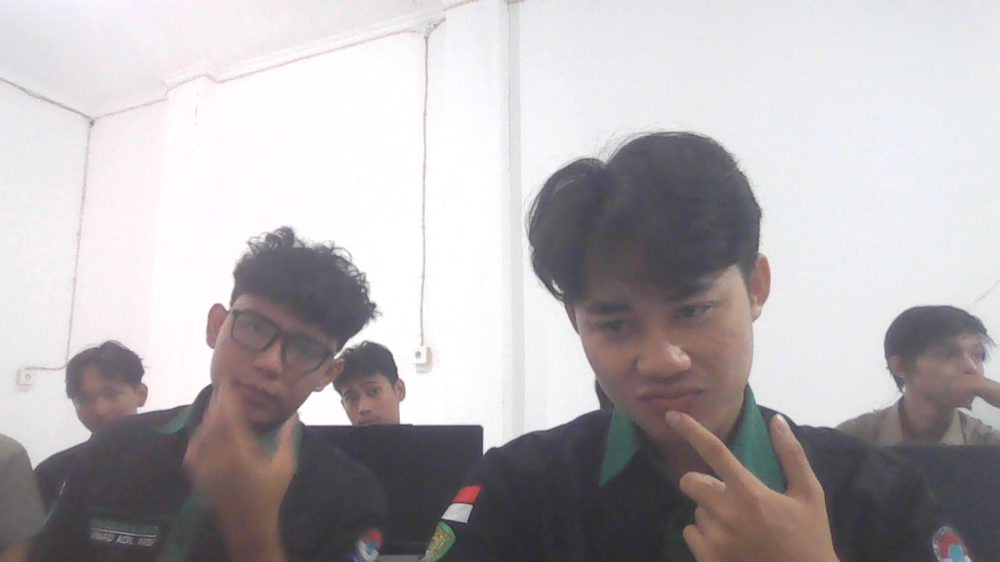
Perkenalkan, nama saya Ginanjar Cahyo Nugroho, lahir di Nabire pada 14 April 2006. Sejak awal kehidupan, saya memulai perjalanan sebagai seorang anak yang terus belajar memahami arti perjuangan dan harapan. Seiring waktu, saya tumbuh dalam lingkungan yang membentuk karakter, mengajarkan arti kerja keras, serta menanamkan semangat untuk terus melangkah maju. Setiap tahap pendidikan yang saya lalui, mulai dari sekolah dasar hingga menengah, menjadi bagian penting dalam membangun diri saya menjadi pribadi yang lebih disiplin dan bertanggung jawab. Kini, saya melanjutkan perjalanan tersebut di Universitas Mulawarman, pada jurusan Pendidikan Komputer. Di sinilah saya mengembangkan pengetahuan, keterampilan, serta mempersiapkan diri untuk menghadapi tantangan di masa depan. Bagi saya, pendidikan bukan hanya sekadar proses belajar, tetapi sebuah perjalanan untuk membentuk masa depan yang lebih baik, dengan tekad, semangat, dan keyakinan untuk terus berkembang.
My favorite music

Video dan youtube yang saya sukai
DRAF SAYA
- anjar
- amin
- akbar
- Maldini
- amin
- anjar
- maldini
- akbar
| No | Nama | NIm |
|---|---|---|
| 1 | Ginanjar | 003 |
| 2 | Amin | 004 |
| 3 | Akbar | 005 |
| 4 | Maldini | 006 |
My favorite game
Menjadi Pelatih Silat
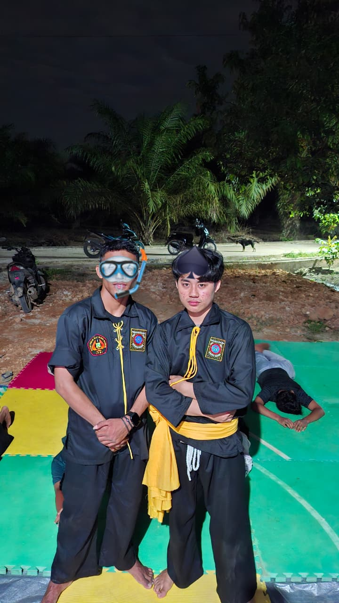
Selain itu, saya juga aktif mengikuti organisasi pencak silat PSHW (Persaudaraan Setia Hati Winongo). Melalui kegiatan ini, saya belajar tentang kedisiplinan, kekuatan mental, serta arti persaudaraan dan tanggung jawab.
Foto Keluarga Kecil kami
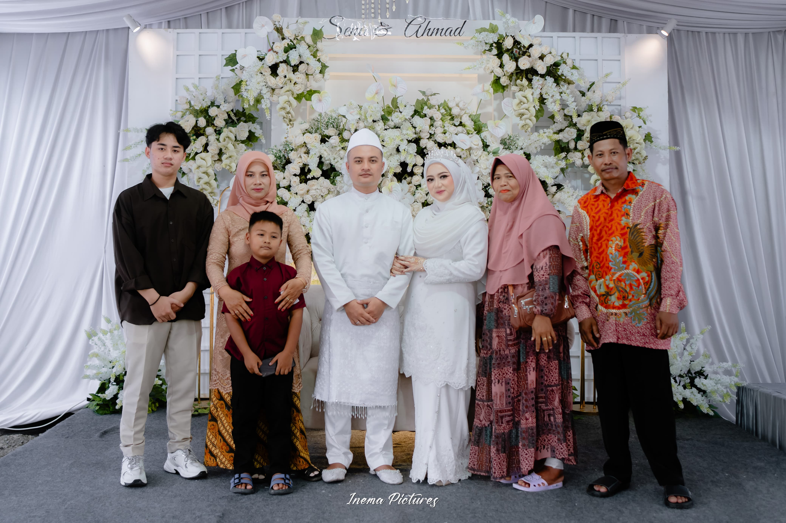
Ini adalah potret keluarga kecil kami, tempat di mana saya tumbuh dan belajar tentang arti kehidupan. Di dalam keluarga inilah saya mengenal kasih sayang, kebersamaan, dan dukungan tanpa batas. Keluarga menjadi sumber kekuatan terbesar dalam setiap langkah yang saya jalani. Dari merekalah saya belajar tentang kerja keras, tanggung jawab, serta pentingnya saling menghargai. Bagi saya, keluarga bukan hanya tempat pulang, tetapi juga alasan untuk terus berjuang dan menjadi pribadi yang lebih baik setiap harinya.
Menghadiri Acara Wisuda
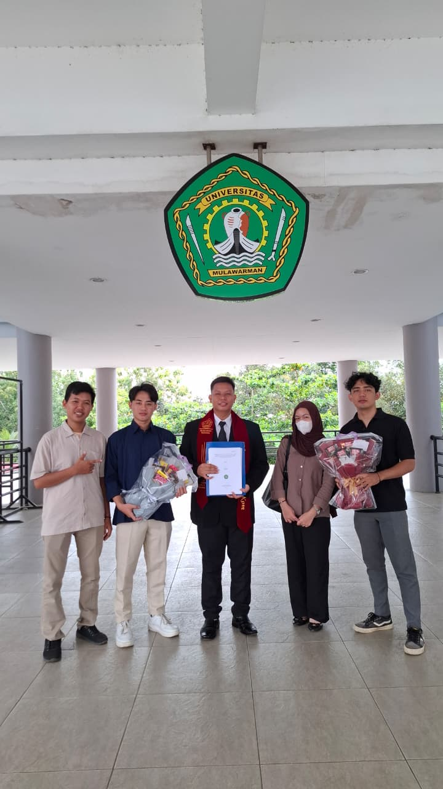
Ini adalah momen berharga saat menghadiri acara wisuda teman, sebuah langkah besar dalam perjalanan pendidikan yang penuh perjuangan. Melihat teman meraih gelar menjadi kebanggaan tersendiri, sekaligus menjadi motivasi untuk terus berusaha mencapai tujuan yang sama.
MENJADI PESERTA OSPEK KAMPUS
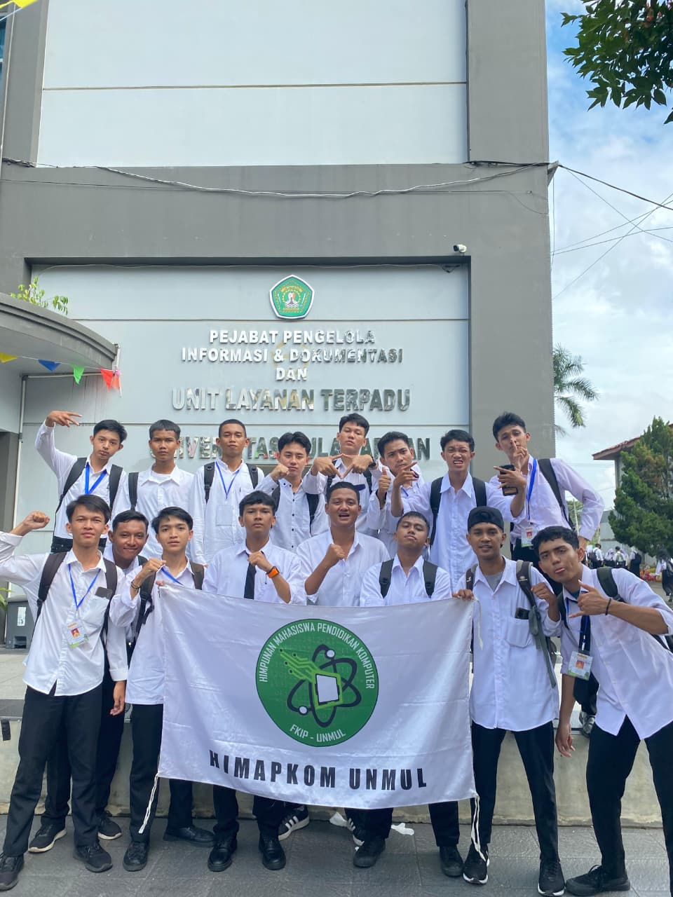
Ini adalah momen saat mengikuti kegiatan ospek kampus, awal dari perjalanan baru sebagai mahasiswa. Dalam kegiatan ini, saya mulai mengenal lingkungan kampus, teman-teman baru, serta berbagai pengalaman yang membuka wawasan.
FULL TIM
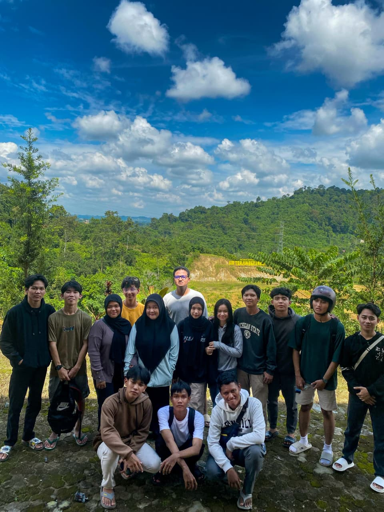
Ini adalah momen kebersamaan saat melakukan wisata bersama, di mana tawa dan kebahagiaan terasa begitu sederhana namun berkesan. Perjalanan ini bukan hanya tentang tempat yang dikunjungi, tetapi juga tentang kebersamaan dan cerita yang tercipta di setiap langkah.
ACARA BAKAR BAKAR
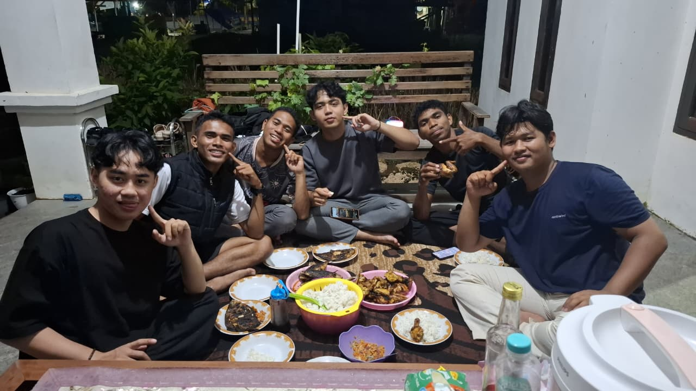
Ini adalah momen kebersamaan dalam acara bakar-bakar, di mana suasana hangat terasa tidak hanya dari api yang menyala, tetapi juga dari kebersamaan dan canda tawa yang tercipta.
MENGHADIRI ACARA SEMINAR
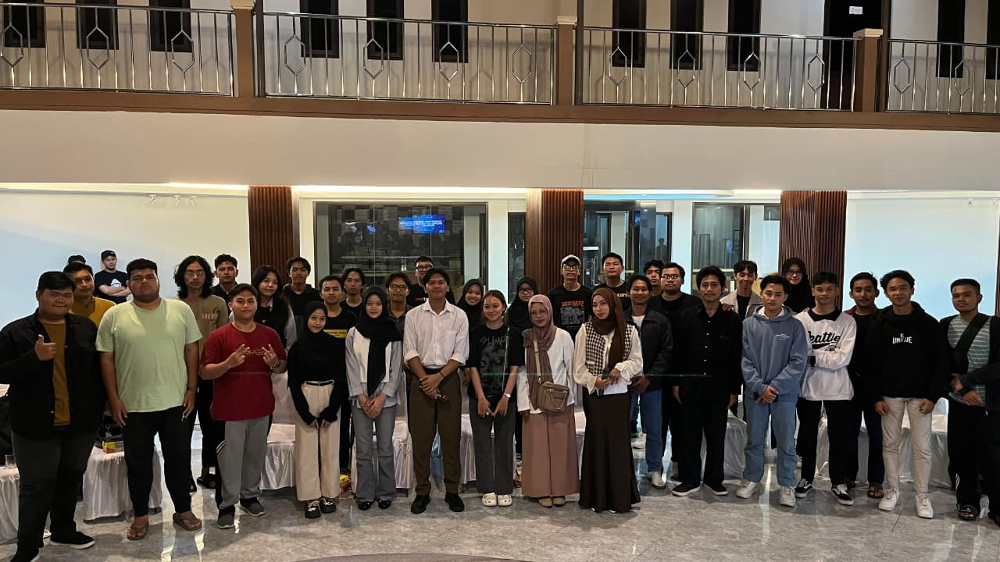
Ini adalah momen saat saya mengikuti acara seminar, sebagai bagian dari upaya untuk menambah wawasan dan pengetahuan di luar pembelajaran formal.
MENJADI PANITIA ACARA KAMPUS
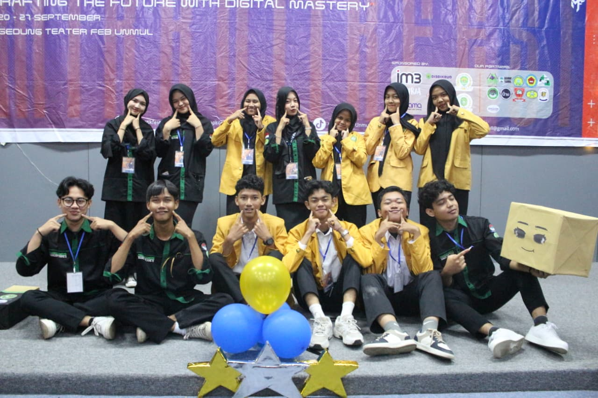
Ini adalah momen saat saya dipercaya menjadi bagian dari panitia dalam sebuah acara kampus. Pengalaman ini memberikan banyak pelajaran berharga, terutama dalam hal kerja sama tim, tanggung jawab, dan manajemen waktu.
JALAN JALAN KE PANRITALOPI BEACH
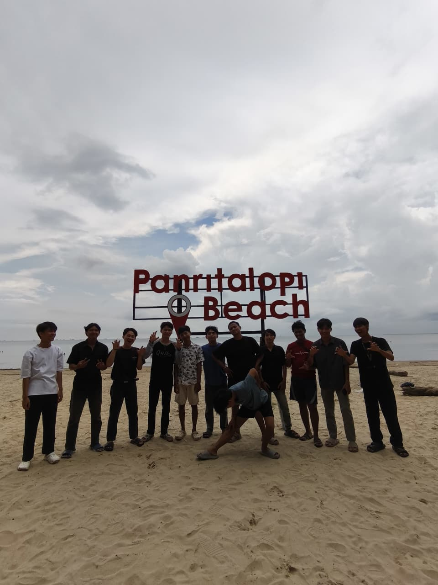
Ini adalah momen saat menikmati waktu dengan berjalan-jalan ke pantai, di mana suasana tenang dan suara ombak memberikan ketenangan tersendiri.
FOTO AWAL MASUK KULIAH
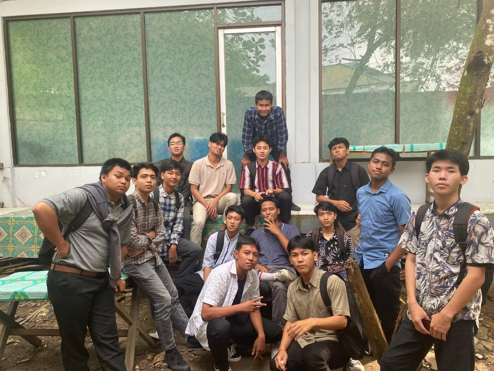
Ini adalah momen awal saya memasuki dunia perkuliahan, sebuah langkah baru yang penuh harapan dan tantangan. Perasaan bangga, gugup, dan semangat bercampur menjadi satu saat memulai perjalanan sebagai mahasiswa.
MENJADI PANITIA HARDIKS
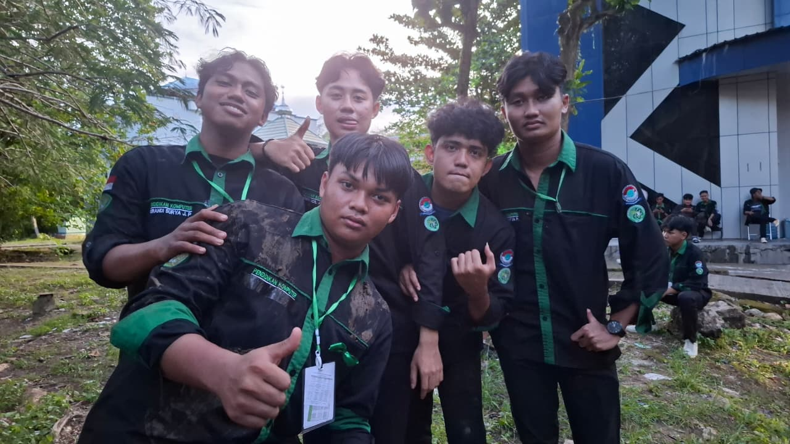
Ini adalah momen saat saya dipercaya menjadi panitia dalam kegiatan Hari Adaptasi Kampus, sebuah kegiatan penting bagi mahasiswa baru dalam mengenal lingkungan perkuliahan.
Beranda Awal